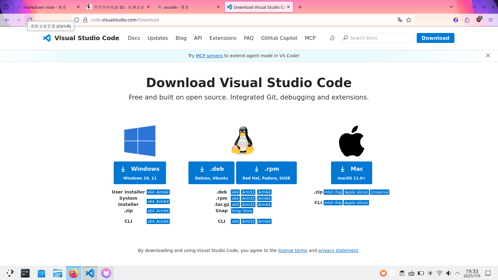
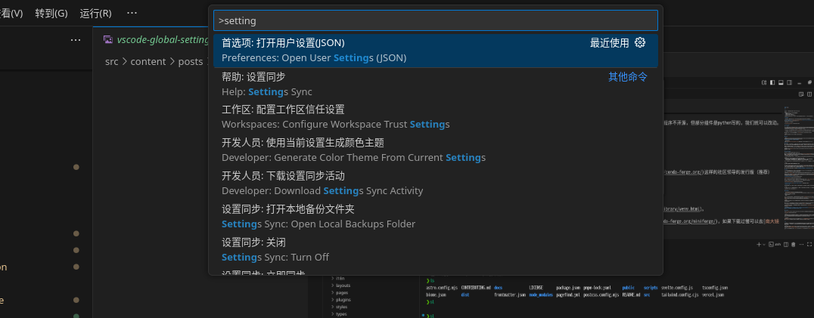
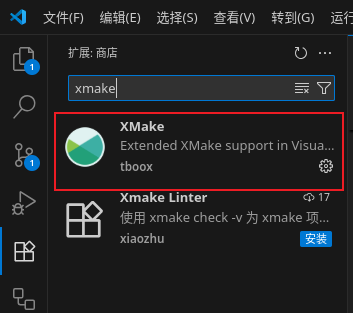
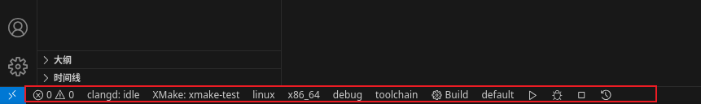
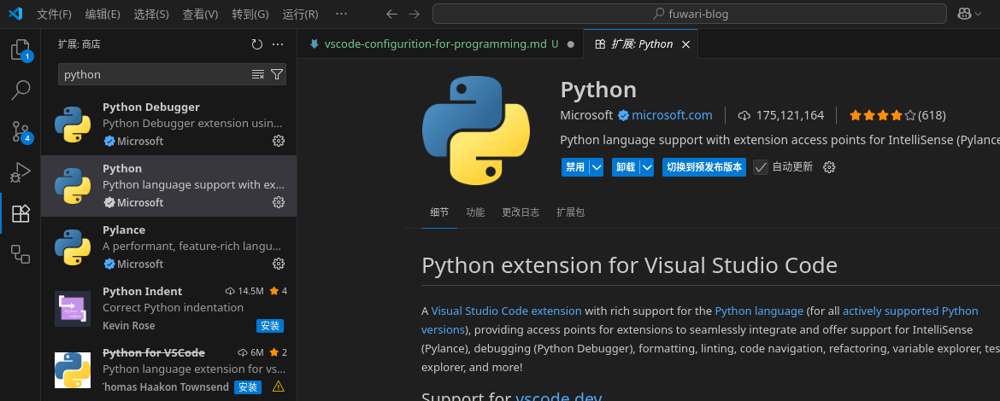

前言#
vscode是一个著名的文本编辑器，深受程序员喜爱。
优点：
- 轻量化
尤其相对于是VS,Pycharm这种重器 - 插件众多，主流选择
- 主要由微软维护
不怕跑路 - 跨平台（win,mac,linux）上均可使用
本篇文章主要讲述vscode在c++和python开发上的配置。供记录自己的思路和为他人做参考。那么我们开始吧。由于作者主要使用debian和win系统，所以对mac少有提及。
vscode下载#
没想到这个也得教，因为xhs上总是有人进入了vscode的冒牌网站，然后说39.9元永久解锁
vscode是免费的，官网是https://code.visualstudio.com/ 然后根据你的系统选择你的下载格式，win就是.exe/msi，ubuntu/debian就是.deb，centos/rocky/fedora就是.rpm
mac我真没用过，原谅我。

vsc的全局设置setting.json可以这样打开 
c/c++环境配置#
c/c++编译器#
c++主流编译器/工具链有三家，MSVC、GCC和Clang。其中MSVC是由微软维护，GCC由GNU维护，Clang由LLVM维护。（在这里不区分GCC和gcc的区别，有想了解的可自行查阅）
其实c语言也是个老登了，直到近几月，c语言官网才出来，c语言发明时是1978年
使用MSVC就不多做讲解，因为VS就是一个完善的IDE且内置MSVC，你只用选择下载c++环境就可以了，无需更多配置
如果你想在win上使用GCC/Clang那么你就要使用mingw64啦。
mingw64是有人将GCC 工具链的代码迁移到win上的工具链，现在似乎推荐使用UCRT64了
配置#
- win:
- 去github上下载别人预编译好的版本。如果网络不好，那么可以下载南大镜像版 记得将/mingw/bin目录添加到系统环境变量哦
- （推荐） 使用msys2的ucrt64环境
去下载msys2安装包，安装
换源:
sed -i "s#https\?://mirror.msys2.org/#https://mirror.nju.edu.cn/msys2/#g" /etc/pacman.d/mirrorlist*更新并安装
pacman -Sy pacman -S mingw-w64-ucrt-x86_64-toolchain mingw-w64-cmake然后添加
D:/msys2/ucrt64/bin到环境变量（假设安装在D:/msys2了）
- ubuntu/debian: 直接
sudo apt install build-essential就可以了。linux还是这么容易配置开发环境
语法高亮#
因为vscode是一个文本编辑器，所以它无法为众多编程语言提供文本高亮以及文本补全等IDE必备功能，而是使用了LSP协议为这一功能进行了封装，使得其他人可以很方便的为vscode编写插件，让它拥有这样的功能。可以查看此网站来进一步了解LSP
你可以选用的高亮插件有两个，一个是ms开发的C/C++插件，另一个是clangd,你均可以在vscode插件商店里下载这两个插件。其中前者由微软维护，后者由LLVM组织维护。
你当然可以去下载CodeRunner或codelldb这样的插件，以让你的vscode更像一个IDE
构建工具/包管理#
构建工具在多文件、依赖管理等方面起着重要作用。
因为c++缺少官方的包管理，也就意味着你不能像python里直接pip install package_name或者rust里cargo add来添加和下载依赖项。现代的语言都有包管理。但存在着vcpkg,conan,还有pacman、apt、yum、dnf这样的包管理器。使用包管理器你可以很方便的下载依赖包，如常用的opengl和boost库等。
虽然C++20引入了module,但目前主流编译器（MSVC,GCC,Clang）支持不完善，MSVC的支持相对完善些。但这个特性不太常用
（举手）诶，等一下，要是包管理的仓库里没有我要的包怎么办呢？
- 这里就要引入构建工具了。你将会手动下载所需的库、设置查找库的目录和设置链接库的名字。
- 为这个库打包并上传至官方包管理仓库，以后你就可以很轻松的install此库了。
在c++里，你将会自己下载第三方的库（静态库、动态库和头文件等），熟悉可执行文件生成的过程（预处理、编译、链接）。
其实编译器做的就是将源代码翻译成汇编或机器码。
常见的构建工具有make,cmake,xmake等。make相当古老且且仅适用于linux平台。cmake应该被叫做构建工具的“构建工具”，因为使用cmake可以生成多种工具链的配置，而你只需编写一遍cmake的配置文件，就可以生成出适用于MSVC+vcpkg或GCC/Clang+make/ninja的配置，之后你就可以使用VS打开生成的工程文件或者在命令行上make就可以编译运行了。
不过我这里主要谈xmake配置、使用，哈哈。xmake既可以当包管理来用，也可以当构建工具用。
xmake#
为什么是xmake呢？xmake相比于cmake有什么优势呢？语法较简洁，目前较为先进的构建系统，对于小项目开发很友好。xmake是国人一位大牛制作的，已经在github上斩获上万star。
安装xmake：官网安装教程,其中主要是用官方脚本或包管理器安装。
官网中有着命令行教程来创建工程、编译程序、运行程序、调试程序的教程，可以跟着做做。
安装xmake的vscode的插件：去vscode插件商店下载哦。

新建一个空文件夹，然后用vscode打开此文件夹，在vscode的命令面板里输入> xmake: create project，然后你就可以选择使用的语言及工程类型了
之后你就能看到哇，可以用点点点来选择你的编译工具链、目标架构平台等详细信息了。

xmake的相关语法可以在官网查询 我就不教了（狡黠）
在vscode里会出现高亮不对（找不到头文件在哪的报错），请查看xmake configuration intellsence来配置vscode
python环境配置#
python最好的就是它包多，科学计算的人在用，数据分析的人在用，后端框架也有。并且也有方便的包管理工具，如pip和conda。
由于python是解释性语言，无需编译即可运行，也就意味着只要把编写的程序发布就相当于发放了源代码。有些程序不开源，但部分组件是python写的，我们就可以改动。
没错没错，c/cpp和rust就是编译性语言
下载python#
- 在官网下载python
- 下载anaconda/miniconda等商业发行版或者是miniforge这样的社区领导的发行版（推荐）
管理python环境包的方法主要有两种
- 虚拟环境(venv)
- conda
虚拟环境是python官方提供的一个管理依赖项目的工具，详情可查看官方文档。
你可以选择anaconda、miniconda、miniforge等来配置你的conda环境。这里推荐使用miniforge，如果下载过慢可以去南大镜像站下载
anaconda 由于包含了许多常用包，导致很重，约1GB，而miniforge和miniconda则较小，约100MB。而miniforge所携带的mamba则比conda性能更高，且你同样也可以使用conda的命令。
如果要在win上使用anaconda最好把环境变量配置一下，不然在终端里敲击conda，win是找不到conda在哪的，详情可参照此配置。然后在anaconda propmt里输入conda init即可完成配置。
在linux的终端里，根据你所使用的终端的不同，你要执行如下命令完成配置：~/miniforge3/bin/conda init zsh (我的终端是zsh,你应该将此处替换为你所使用的终端，如fish bash等)
我们在完成上述配置后一定要对pypi和conda进行换源，因为python在你在你命令pip install package后，会向某服务器下载你要的包，默认是python官方的服务器（国外），为了高速下载包请自己换源至国内高校镜像站
插件配置#
请下载ms-python,之后你的python代码就有高亮和代码提示了，好诶。

清华大学镜像站,中国科学技术大学镜像站,南京大学镜像站，这些镜像站可以方便国外常用软件的下载和换源，以及linux的下载和换源。
结语#
vscode号称一个code写天下，你基本只用配置插件即可。对我来说，因为我的主系统是debian+win，我有跨平台的要求，所以选择了vscode。如果只在win上开发，你当然可以选择“宇宙第一IDE”VS。至于其他的文本编辑器如vim,emacs等就靠读者自己探索吧。因为我主力是code，vim主要用于在命令行里编辑文件（linux自带vi和nano），emacs用的少
微软开源的文本编辑器 code oss，而vscode是基于此项目的微软独有软件。如果你在win上安装vscode的时候就会注意到其软件许可证是MICROSOFT SOFTWARE LICENSE，而不是code-oss的MIT协议.
由上述开源仓库编译的产物被称作codium，vscode被称作code。codium的官网是https://vscodium.com/。